Social Science
Part - 2
Standard V
GOVERNMENT OF KERALA
DEPARTMENT OF GENERAL EDUCATION
Prepared by
State Council of Educational Research and Training (SCERT) Kerala
2024
Page 1
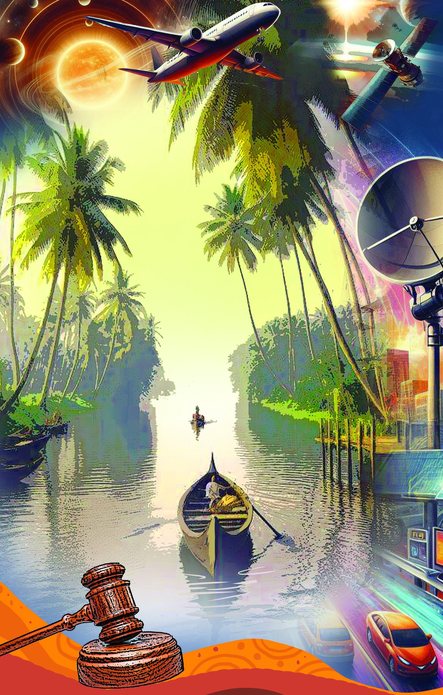
Page 2
Jana-gana-mana-adhinayaka, jaya he
Bharata-bhagya-vidhata.
Punjab-Sindh-Gujarat-Maratha
Dravida-Utkala-Banga
Vindhya-Himachala-Yamuna-Ganga
Uchchala-Jaladhi-taranga.
Tava shubha name jage,
Tava shubha asisa mage,
Gahe tava jaya gatha,
Jana-gana-mangala-dayaka jaya he
Bharata-bhagya-vidhata.
Jaya he, jaya he, jaya he,
Jaya jaya jaya, jaya he!
Prepared by
State Council of Educational Research and Training (SCERT) Kerala
Poojappura, Thiruvananthapuram 695012, Kerala
Website : www.scertkerala.gov.in, e-mail : scertkerala@gmail.com
Typeset and design by : SCERT
Printed at : KBPS, Kakkanad, Kochi-30
© Department of General Education, Government of Kerala
Social Science
India is my country. All Indians are my brothers and
sisters.
I love my country, and I am proud of its rich and varied
heritage. I shall always strive to be worthy of it.
I shall give respect to my parents, teachers and all elders
and treat everyone with courtesy.
To my country and my people, I pledge my devotion. In
their well-being and prosperity alone lies my happiness.
THE NATIONAL ANTHEM
PLEDGE
V
Page 3
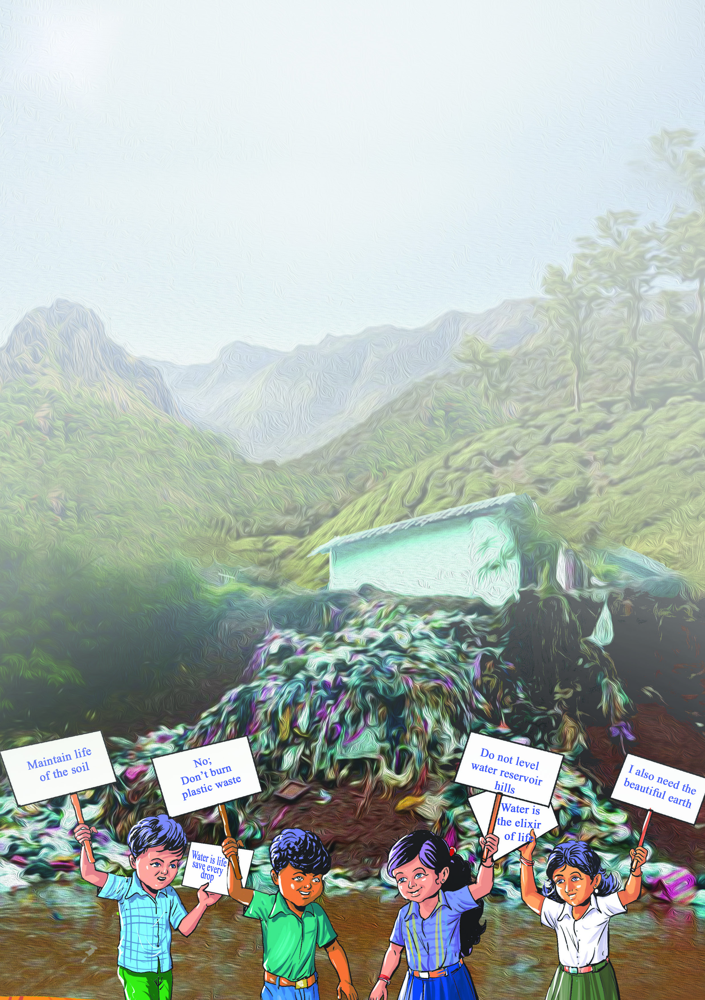
Dear friends,
This is the second part of Social Science Text Book of Class V.
The lesson ‘Transport and Communication Systems’ is sufficient
to understand historically the origin and development of
transportation and communication systems and to explain the place
of these in determining the trends of the present day. The lesson
‘Know Our Land’ deals with the need to preserve the physiography,
geographical features and the natural resources in Kerala.
The lesson ‘Towards Equality’ enables us to attain a basic
understanding of the transformation of our society from the Socio-
economic inequality to equality.
Wonders in the sky and earthly phenomena are dealt with in the
lesson ‘Wonders in the Sky and Splendours on the Earth.’ The
lesson ‘The Law and the Society’ points to the need to follow laws
in social life. It is assured that this book is of great help to have a
deep understanding of the society and to imbibe human values.
Dr. Jayaprakash R. K.
Director SCERT
Page 4

State Council of Educational Research and Training (SCERT)
VidyaBhavan, Poojapura, Thiruvananthapuram 695 012
Academic Coordinator
Dr. Anjana V. R. Chandran
Research Officer, SCERT KERALA
Advisor
Dr. K. N. Ganesh
Chairman
Kerala Council for Historical Research
Dr. Nandakumar B. V.
Assistant Professor
Department of History
Sree Narayana College,
Varkala
Chairperson
Dr. Abhilash Kumar K. G.
Assistant Professor
Department of Political Science,
B. J. M. Govt. College, Chavara
Dr. Suresh Babu G. S.
Professor in Sociology of Education,
Zakir Hussain Center for Educational Studies
Jawaharlal Nehru University,
New Delhi
TEXTBOOK DEVELOPMENT TEAM
TEXTBOOK DEVELOPMENT TEAM
Experts
Achuthankutty K.
UPST (Retd.)
AUP School Irumpalassery,
Palakkad
Pavithan C. K.
HST (Retd.)
GHSS, Kaniyampatta,
Wayanad
Nisha M. S.
UPST
PHSS, Mezhuvely
Pathanamthitta
Venugopalan K.
BPC (Retd.)
Pattambi, Palakkad
Santhosh Veliyannoor
Artist, Kottayam
Beena T. Chandapilla
UPST,
Govt. UPS, Kozhancherry,
Pathanamthitta
Pushpangadan U.
UPST
GHSS Anchal West,
Punalur, Kollam
Radhakrishnan P.
Headmaster (Retd.)
GLP School Alur,
Palakkad
Anas N. S.
Research Scholar
NSS College, Nilamel,
Kollam
Vishnu P. S.
Artist, Nemom,
Thiruvananthapuram
Benoy V.
Principal
GHSS, Payambra,
Kozhikode
Beena S. Nair
UPST GGHSS
Malayinkeezhu
Thiruvananthapuram
Margaret Lini V. P.
HST
Govt.V&HSS, Vellanadu,
Thiruvananthapuram
Valsala Kumari K. R.
HST (Retd.)
PBMHSS, Kodungallur,
Thrissur
Niketan M.
Student (+1), GHSS
Medical College Campus,
Kozhikode
Participants
Page 5


7. Transport and Communication Systems...111 - 132
8. Know Our Land . . . . . . . . . . . . . . 133 - 148
9. Towards Equality . . . . . . . . . . . . . 149 - 160
10. Wonders in the Sky and Splendours
on the Earth . . . . . . . . . . . . . . . 161 - 178
11. The Law and The Society . . . . . . . . 179 - 189
Content
Contents
Activity
Let's discuss
Picture collection
Questions
Let's make
Let's read
Extended reading
(not subject to assessment)
Extended activities
Let's colour
Let's sing
Let's play
Let's write
Let's draw
Role play - mime
Placard making
ICT
Collage
Some symbols are used in this book
for the ease of study
Page 6


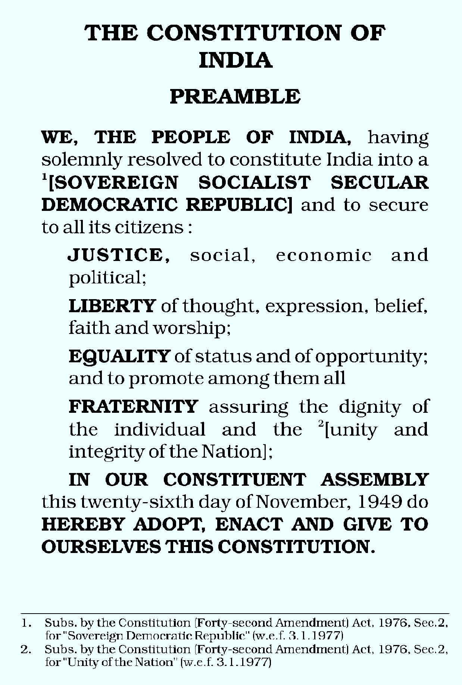
Page 7

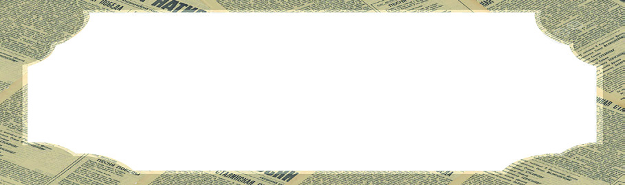

111
Transport and Communication Systems
Transport and
Communication Systems
Transport and
Communication Systems
7
Look at the news collage cited.
How could the heart be quickly transported to Kochi from
Thiruvananthapuram?
•
•
In what ways would the coastal people have been alerted?
•
•
How were the flood relief activities coordinated quickly?
All these instances demonstrate the relevance of transport and
communication systems in our day to day life.
Transport and communication systems are the means of overcoming the
physical distance among people. This is an effective system to connect
people, considering the distance between them. The transportation
system helps to move people or goods from one place to another.
Communication involves transferring ideas or messages from one source
to another.
Chief Minister holds emergency
video conference with district
collectors to coordinate flood
relief activities
The heart of Kottarakkara resident
transported from Thiruvananthapuram
is brought to Kochi in Air Ambulance
for transplantation
Earthquake
in
Indonesia;
Tsunami
Likely:
Coastal
Community Alerted
Page 8

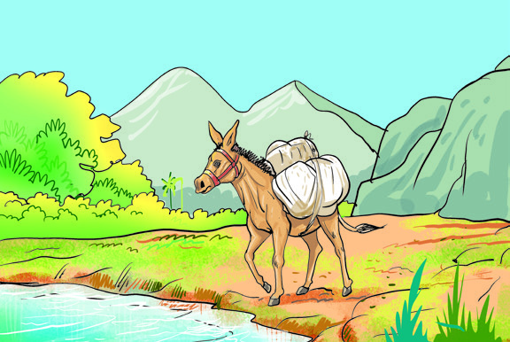
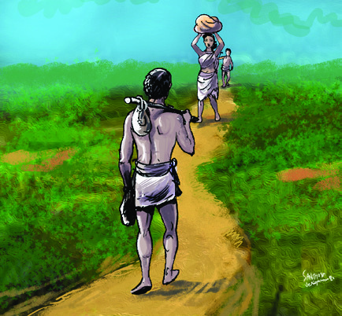
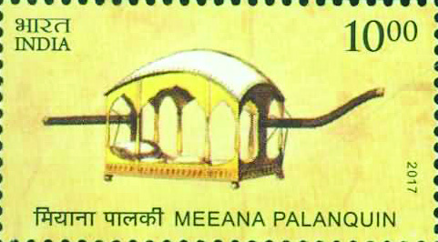
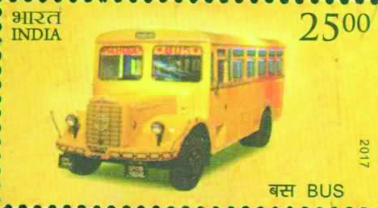
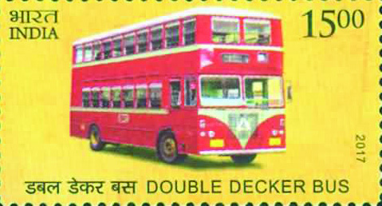

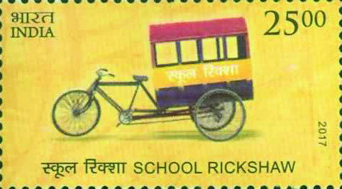

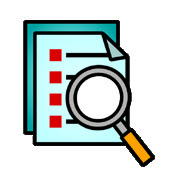
112
Social Science Class V
This is a page from Neenu’s postal stamp album. These are the stamps
issued by the Indian Postal Department on the evolution of the transport
system over the years. Find out the vehicles that are featured on the
stamps.
Are the vehicles seen on the stamps in
use nowadays?
You know that man is the only creature
that uses vehicles. Earlier, instead
of vehicles, animals like elephant,
horse, bull and camel were used for
transportation. For what purposes do
humans use vehicles today?
•
for travelling
•
to transport goods from one
place to another
•
•
How might humans have met these needs before the invention of
vehicles?
Transportation
Vehicle
The term vehicle (In
many Indian languages:
vaahanam)
means
“a
device to carry.” Vehicles
are mechanical - non-mechanical
systems used for the movement of
people and the transportation of
goods.
•
on foot
by carrying on the head
using animals
Page 9

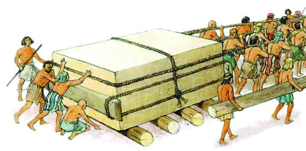

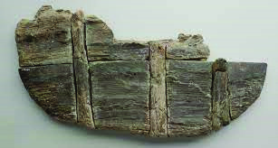

113
Transport and Communication Systems
What were the limitations of these methods?
•
the growing demand could not be met
•
•
Humans developed vehicles to overcome the limitations mentioned
above. The invention of wheels became the basis of changes in the field
of transport.
From Wheel to Vehicle
The invention of the wheel, which changed the lives of human beings,
did not happen in a single day. Realising that rolling objects on a
rounded wooden log would make it easier to carry, people made wheels
by making the logs smaller and smaller.
The picture shows the parts of a 4500
year old wheel found on the shores of
Lake Zurich in Switzerland in 1976. Part
of this wheel made of maple planks, is preserved in
the Swiss National Museum.
Page 10
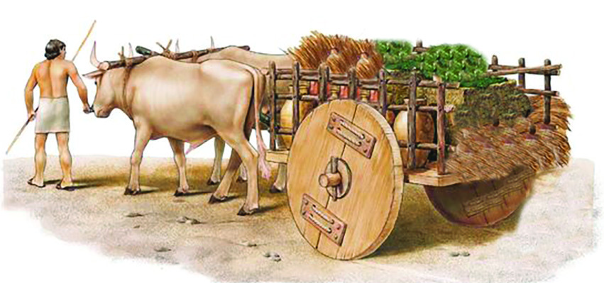

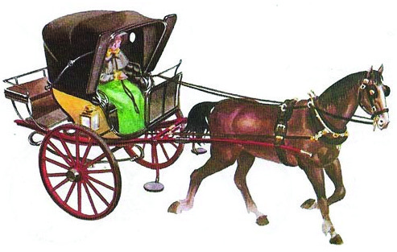

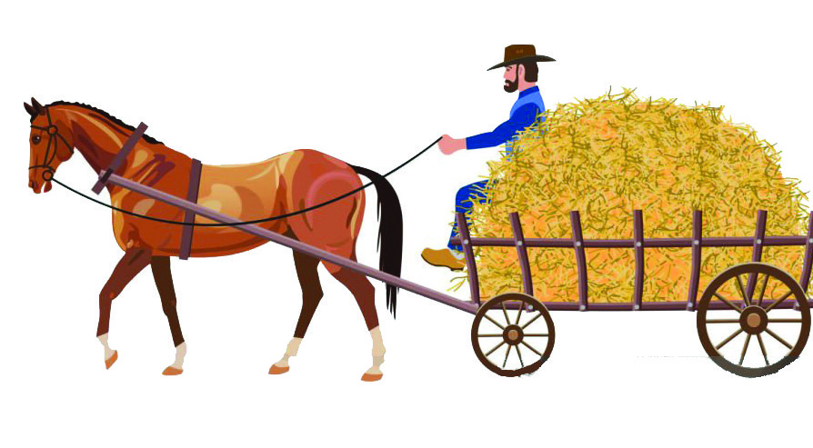
114
Social Science Class V
Mesopotamia
The Mesopotamians are believed to have made wheels about
5000 years ago. The wheels they made were of three thick planks
joined together with copper nails pierced into leather straps. The
Egyptians and Romans improved the wheels further. The Mesopotamian
culture has flourished in the regions in and around the present-day
Iraq. This area lies between the rivers Euphrates and Tigris. The word
‘Mesopotamia’ means the ‘land between two rivers.’
Look at the pictures.
The images given show how wheels were used for transportation in the
past. What information can be obtained from these?
•
wheeled carts were pulled by humans
•
wheeled carts were pulled using animals
•
•
Earlier, both human-drawn and animal-drawn wheeled carts were used
for various purposes of transportation. Such wheeled carts were used to
transport goods and for moving humans from one place to another. Later,
fuel-powered machines were invented. With the advent of mechanised
Page 11

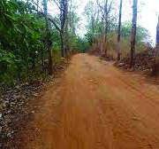


115
Transport and Communication Systems
vehicles, there have been big changes in the field of transportation.
Gradually, different modes of transport came into practice to move
goods and people from one place to another.
Mode of Transport
Land Transport
Water Transport
Air Transport
Land Transport
Land transport is the mode of transport on land. Identify and write down
the major modes of land transport from the flowchart.
....................................
....................................
Road Transport
Don’t we need roads for the smooth movement of vehicles? Observe the
images given below regarding the formation of roads.
Draw pictures showing the progress of transportation from the
wheel to the vehicle and conduct an exhibition in the class.
Mode of Transport
Observe the flowchart showing the main modes of transport we use
today.
Single track path
Mud path
Stone-paved path
Road
Transport
Rail
Transport
Inland
Transport
Maritime
Transport
National
Airways
International
Airways
Page 12


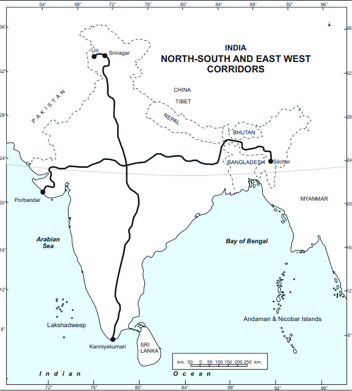
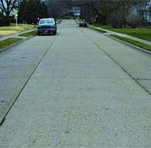
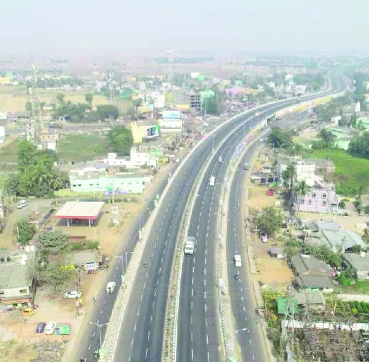
116
Social Science Class V
Our country has a wide network of roads consisting of rural roads,
state highways, national highways and express highways. India has the
second-largest network of roads in the world. Road transport plays an
important role in ensuring the socio-economic growth of a country.
Macadam Roads
Scottish engineer J. L. Mc Adam pioneered the modern type of road
construction around 1820. The roads constructed using crushed
stones levelled by road roller machines, are known as ‘ Macadam Roads.’
Single-track
paths
and
mud paths were used for
transportation in ancient
times. Over the passage of
time, stone-paved paths,
concrete roads, and tarred
roads came into existence.
Golden Quadrilateral
It is a network of national highways
that connect India’s major industrial-
agricultural hubs. This route passes
through Delhi, Kolkata, Mumbai,
Chennai and covers 12 states.
North-South and East-West
Corridors
The North-South Corridor
connects Srinagar with
Kanyakumari and the East-West
Corridor connects Silchar with
Porbandar.
Concrete road
Tarred road
Major Highways in India
Page 13
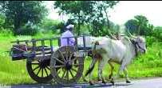

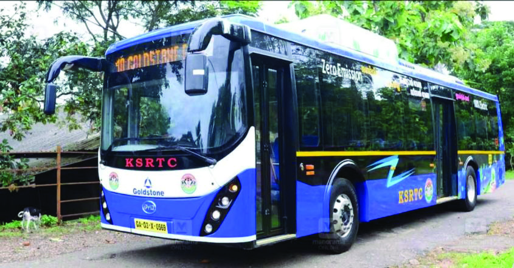

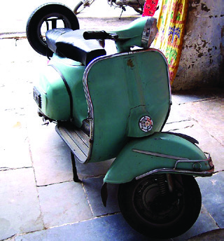

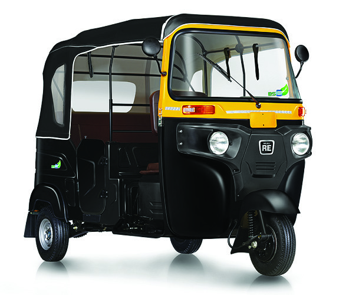


117
Transport and Communication Systems
Observe the pictures showing the evolution of wheeled vehicles. Discuss and
prepare notes regarding the changes in road transport.
Collect pictures of different vehicles and roads - old and new. Make an album
and display in the class.
Advantages of Road Transport
•
relatively less expensive
•
accessible to all sections of people
•
best suited for short trips
•
•
Rail Transport
The sight of a train arouses the curiosity of people of all age groups. It is
the fastest mode of transport on land. The railway system was launched
first in Britain. The locomotive train came into being with the invention
of steam engine. In 1825, George Stephenson built the first locomotive
train engine in Britain. Coal was used as fuel to run it. Later, due to
technological advancements, diesel engines and electric engines came
into existence.
Page 14

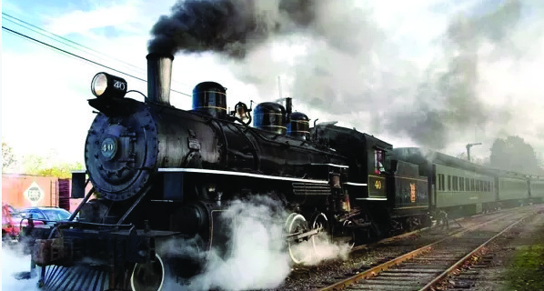


118
Social Science Class V
In 1825, the world’s first railway track was built connecting the cities
of Stockton and Darlington in England. The world’s rail transport
commenced by running the locomotive, ‘Stephenson Rocket’ built by
George Stephenson, on this track.
Observe the pictures and write the characteristics of trains of
different eras.
1. the train carrying coal
2. ....................................................................
3. ....................................................................
4. ....................................................................
5. ....................................................................
6. bullet train
Pictures of trains in different eras
3
4
5
6
1
2
Page 15
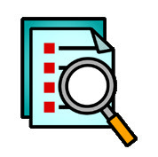

119
Transport and Communication Systems
It was the British who started rail transport in India. They transported
raw materials and natural resources from India to Europe by sea. Rail
transport in India was started as a means to transport these goods and
natural resources to the ports.
The railways is the mode of
transport that people mainly rely on
for their daily travel, transportation
of goods and leisure trips. A broad
and extensive railway network
exists in India. India is one of the
countries with the longest railway
system in the world. The metro rail
system has been launched in major
cities of India to improve transport
facilities and reduce air pollution.
India’s first railway, Bombay (Now
Mumbai) to Tane 1853
First railway in Kerala from Beypur to Tirur
– 1861
Metro Rail
Metro rail was started to
solve the traffic issues in
big cities and reduce air
pollution. Metro rail system exists in
all the major cities of India including
Kolkata, Delhi, Mumbai, Bengaluru,
Chennai and Kochi.
Observe the transport map of Kerala given at the end of this
chapter (Page 131). List out the districts without rail transport
in your notebook.
Advantages of Rail Transport
•
cheapest mode of transport to carry more people
•
helps to move bulk amount of goods
•
plays an important role in the growth of economic system
•
Page 16


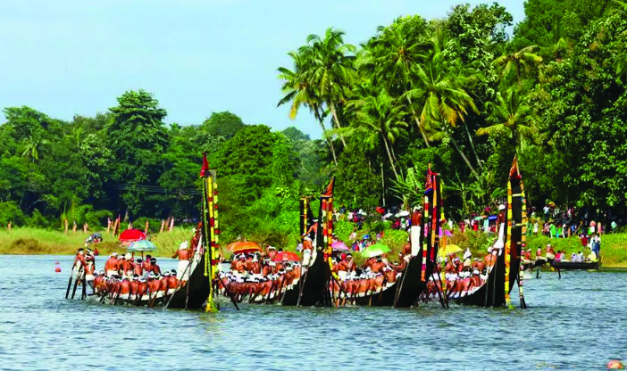


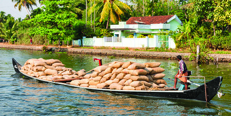

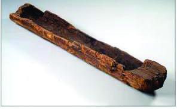
120
Social Science Class V
What could have been the circumstances that led humans to discover
the mode of water transport?
Water Transport
Observe the pictures.
For what purposes do humans depend on water transport?
travel
Canoe of the ancient period
The situations in which humans and animals were not able to cross
water bodies might have led to the
concept of water transport. Humans
who used rafts and logs made canoes
by hollowing out the pith of logs by
burning them. Later, the invention
of appropriate tools made canoe
making easy. Gradually, various
Page 17


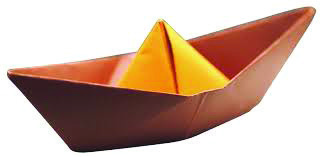
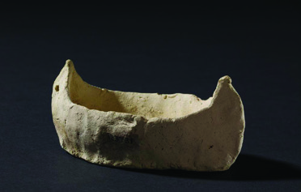


121
Transport and Communication Systems
Mesopotamian people used watercraft such as ships for trade. They
built boats of various sizes that were propelled by oars and long
poles. These were used for goods transport and navigation.
Ship building centre, Lothal
types of boats and sailing ships were built. This further improved water
transport.
Inland Waterways of Kerala
National Waterway No-3 from Kollam to Kottapuram and Connolly
Canal from Kozhikode to Kodungallur are the two important inland
waterways in Kerala. Until the railway system got strengthened,
goods transport was mainly dependant on these waterways. Nowadays,
inland waterways attract considerable number of tourists.
Which are the water transport vehicles you have travelled on?
Make models of various water transport vehicles using available
eco-friendly materials and demonstrate them in the class.
Water transport can be divided into two - inland and maritime. Before
the advent of railways, inland water transport was the main mode of
transport in India. Inland water transport developed in areas where there
were plenty of rivers and backwaters. Later, canals were constructed for
this purpose.
Remnants of dockyards have been found at
Lothal in Gujarat, a site of the Indus Valley
Civilization. The insignia of boat were traced on
seals excavated from Lothal and Mesopotamian
seals found at Harappa. From this, it is evident
that water transport existed then.
Page 18
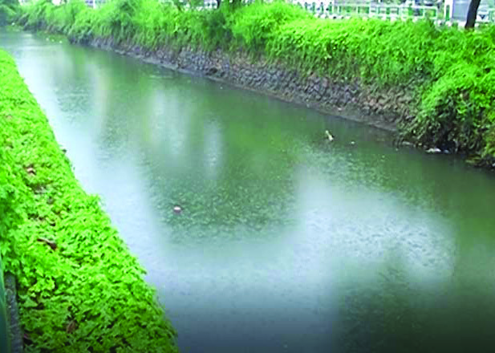


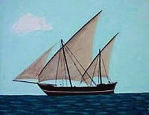

122
Social Science Class V
Europeans gave importance to water transport to improve trade with
India. Earlier, Europeans built canals as a means to transport coal to cities.
Gradually, such canals began to be used mainly for water transport.
Connolly Canal, Parvati Puthanar, etc. are some of the canals built in
Kerala. Alappuzha, known as the Venice of the East, has many canals.
Connolly Canal
H.V. Connolly, the District Collector of
Malabar during the British rule proposed
a broad waterway from Kozhikode
to Kodungallur in 1845. Later, canals were
built connecting the rivers up to Kodungallur
including Ponnani and Chavakkad regions. This
waterway, thereafter was known as the Connolly
Canal.
Parvati Puthanar
Parvati Puthanar is a canal connecting
Veli
-
Kadinamkulam
backwaters
in
Thiruvananthapuram district.
Sail Ship
In the past, international travel and goods transport were mostly
dependant on maritime transport. The invention of sailing ships,
navigated with the help of wind has improved maritime transport. That
marked an increase in the number of voyages to other countries. With the
invention of steam engine, steam-powered sailing ships were built and
sea voyages became safer. Later, fuel-powered ships came into being.
Ship
Page 19
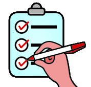


123
Transport and Communication Systems
Maritime transport is possible through coastal waterways and
international waterways. Coastal waterways transport goods and
passengers between ports located on the coasts of the country. But,
goods and passengers are transported between ports of other countries
through international waterways. Imports and exports take place mainly
through this waterway.
What are the advantages of water transport?
•
relatively less expensive
•
a low level of pollution
•
•
A port (harbour) is a place where a ship docks on the seashore.
Which are the major ports in Kerala? Find them out by observing
the Transport Map at the end of the chapter (Page 131).
Jacques Montgolfier was the owner of a
paper factory in France. Jacquis’s wife
lit a fire under the hung wet clothes to
dry them quickly. He was surprised to see the
clothes that laid out to dry were flying up in the
sky. The sight made Jacques think a lot. He had
no rest for the next few days. Together with
his brother Joseph Montgolfier, Jacques made a giant balloon. The hot air-
filled balloon rose up in the air surprising them. After that, they placed a
basket in the lower part of the balloon, and the chickens and ducks from his
house were made to fly. Then Jacques and Joseph flew over the city of Paris
in the balloon vehicle for half an hour.
Air Transport
Prepare a chart showing the means and advantages of water
transport.
Page 20

124
Social Science Class V
Hope you read the note. This incident of 1783 marked the beginning of
aviation. Balloons filled with hot air were first used by humans for aerial
travel. Later, airships were built by filling large balloons with gases of
low density. Then parachutes were invented to help descend at a lower
speed. But none of these could be conveniently controlled and used by
humans.
Orville Wright
Wilbur Wright
Parachute
Skyship
An airplane, which can be said to be the first type of today’s airplane,
was built by the American brothers Orville Wright and Wilbur Wright
(Wright brothers). The name of the plane they built was Flare-1. Flare-1
took off on December 17, 1903, from North Carolina, USA.
In due course, humans were able to build helicopters, jet planes, passenger
planes, and supersonic aircraft.
Air travel is a very useful mode of travel for long distance within and
outside the country. It is also the fastest mode of transport at present.
The air transport system is also widely used for military purposes.
Flare - 1
Page 21

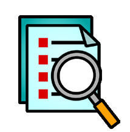


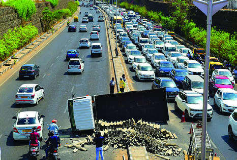

125
Transport and Communication Systems
Observe the transport map of Kerala at the end of this chapter
(Page 131) and write the names of districts where the international
airports of Kerala are located.
Air Transport in India
Air transport in India started with the dawn of the 20th century. In
1911 a plane carrying letters took off from Allahabad to Naini which
is only to 10 km away, marked the beginning of Air transport in
India. In 1912, the first international flight to and from India was operated from
London to Karachi and from there to Delhi. India’s first commercial airline,
Tata Airlines, operated its first service from Karachi to Mumbai in 1932. India’s
first airport was established at Juhu, Mumbai. Today, India has become one of
the countries with the most extensive air transport network in the world.
Haven’t you noticed this news? Why have the employees been advised
to avoid private vehicles and use public transport systems?
Observe the pictures.
Advantages of Air Transport
•
fastest mode of transport
•
connects countries of different continents and makes the earth a
global village
•
used for national defence services
•
Air pollution: Schools and colleges closed in Delhi
New Delhi: As air pollution continues
to worsen, schools and colleges in Delhi
will remain closed until further notice.
The ban on construction activities has
also been extended. The government
has advised employees to avoid private
vehicles and use public transport system.
Page 22


126
Social Science Class V
Act out a mime about communication in various situations
(hunting, fishing, trading, travel) at a time when there was no
language, symbols, or writing.
What are the consequences of an increased number of vehicles?
•
increased traffic congestion
•
air pollution
•
noise pollution
•
health problems
•
high traffic accidents
•
limited parking space reduces safety for pedestrians and
bicyclists.
•
•
Organise a discussion in the class and prepare notes on the need
to use public transport system.
Communication
Communication is the transfer of information from one place or one
person to another place/person. Since ancient times, humans have
developed different means of communication according to their needs.
How do we communicate?
through conversation
through writing
over the phone
How could one person communicate an idea to another at a time when
there were no languages, symbols, or writing?
through gestures
by making specific sounds
Page 23
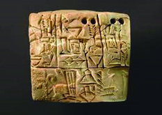
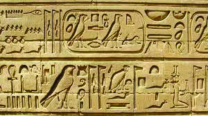
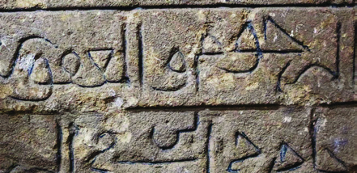
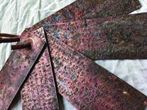

127
Transport and Communication Systems
Early humans expressed their ideas through body and facial movements,
and sounds. Later they used fire and smoke as signs to communicate
ideas to those in distant places. Historians opine that humans started
using symbols about 30,000 years ago.
Paintings on the walls of caves in ancient times are examples of
communication during that era. Symbols and pictures were used to
express ideas. Later they developed scripts and writing.
It is assumed that humans developed writing about 5000 years ago. The
Sumerians were the first to develop writing. This script became known as
Cuneiform. These were written on clay tablets. Likewise, Hieroglyphics
is another script formulated in Egypt.
Hieroglyphics script
Cuneiform script
Image
The surface used to write
The writing device
Stone
Sharp stone
Copper plate
Metal stylus
Palm leaves
Stylus/Narayam
What are the means used to convey news and messages nowadays?
Given below are scripts used in different eras to convey news and
messages.
Page 24
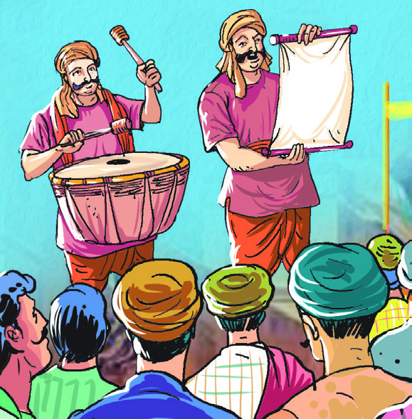
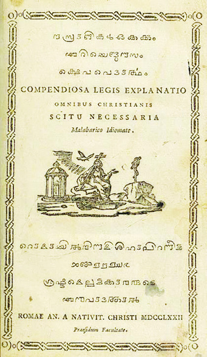
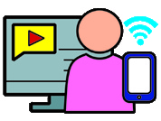
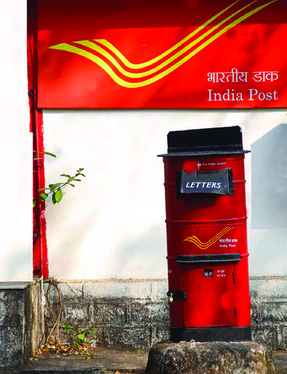

128
Social Science Class V
In the early days, horses, dogs and birds
were used to carry news and messages from
one place to another. Image depicted here is
one of the means of communication used by
kings in ancient times to convey news and
messages to the public. With the invention of
the printing press, the transmission of news
and messages became easier.
Royal proclamations - portrait
The arrival of the postal system made
communication faster. Progress in transport
facilities also influenced communication. The
postal system became widely used to convey
ideas, messages and news. Advances in science
and technology have paved the way for giant
leaps
in
communication.
The
invention
of the Internet and related services has
brought revolutionary changes in the field of
communication.
Printing technology was invented by the Chinese. In the early
days, printing presses were operated using wooden blocks. Later,
Gutenberg, a German, invented the iron printing
press. With the advent of printing, ideas, and
news began to spread quickly.
Gutenberg’s printing press
Gutenberg
Samkshepa Vedartha
(The first book printed entirely in
Malayalam)
Prepare a video showing the changes in communication with
the help of the teacher
Indian Postbox
Page 25
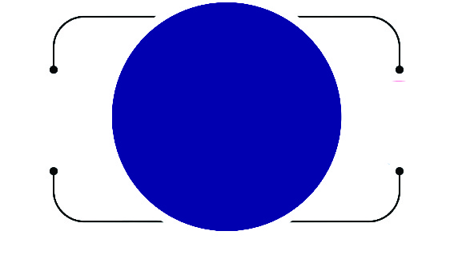

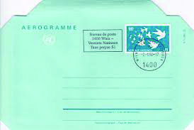


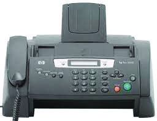
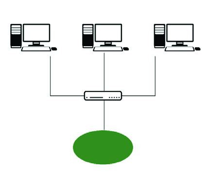
129
Transport and Communication Systems
Means of Communication
News and messages are exchanged mainly in two ways.
Means of
Communication
Interpersonal
Communication
Mass
Communication
Interpersonal Communication
Interpersonal communication is the exchange of messages or ideas from
one person to another. The tools used for the same are called Interpersonal
Communication tools.
Mass Communication
Mass communication is the delivery of a message or idea to a large chunk
of people. Mass media are the media used for this purpose.
Mobile phone
E-mail
Fax-
machine
Inland
Telegraph
Telephone
Interpersonal Communication Tools
Router
Computer 1
Computer 2
Computer 3
Internet
Page 26

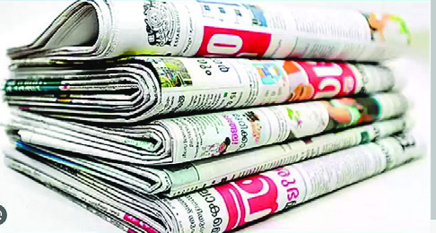


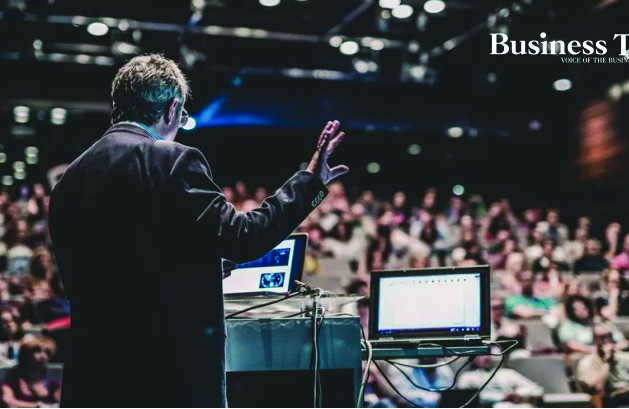


130
Social Science Class V
In addition to the above, ideas can be communicated to a large number of
people through books, magazines, art forms, movies, and social media.
Radio
Newspapers
Seminar
Public meetings
Street play
Television
Mass Communication Tools
Discuss and prepare a report on the impact of information technology
in our day to day life.
Internet-based Advanced Communication Technology
Internet is a network that connects computers all over the world. We
get various types of information with the help of the internet. Below
are some of the advanced communication systems that are being
used with the potential of the Internet.
Video Conferencing
People in remote places can view and talk, and exchange ideas with the help
of the computer.
E-Commerce
It is the system of buying and selling of goods and services using Internet.
E-mail
It is a system of sending, receiving and collecting messages using electronic
media.
Tele-Medicine
Utilising the services of expert doctors at a distance with the help of information
technology.
Page 27
131
Transport and Communication Systems
Transport and communication system plays an important role in
shaping the modern society. The rapid growth of communication
technology provides an opportunity for the people of the world to get
together. This makes the world a global village. We can use transport
and communication systems to help friendly gatherings and to foster
human values.
Index
Kerala
Transportation Map
Tamil Nadu
Karnataka
Lakshadweep Sea
International Airport Kannur
International Airport
Thiruvananthapuram
International Airport Kochi
International Airport Kozhicode
Vizhinjam Harbour
Kochi
Harbour
Harbour
Airport
Railway
Highway
MC Road
District Border
MAP NOT TO SCALE
Page 28

132
Social Science Class V
1. Organise a virtual water travel and air travel with the help of
your teacher.
2. Organise a seminar about the changes that transport has brought
about in human life.
3. Enquire and make notes on job opportunities in the fields of
transport and communication.
4. Make models of different types of vehicles and organise an
exhibition in your school.
Extended Activities